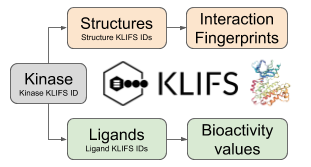
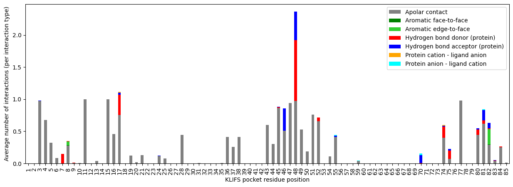
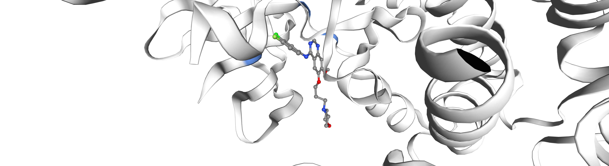
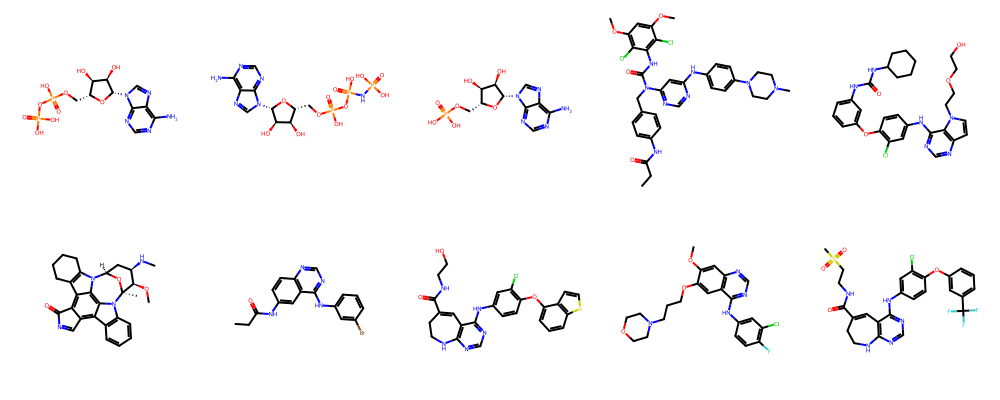
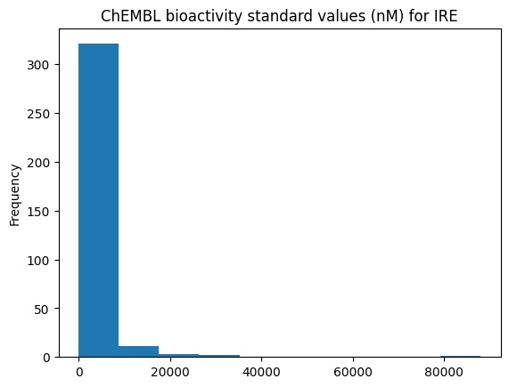
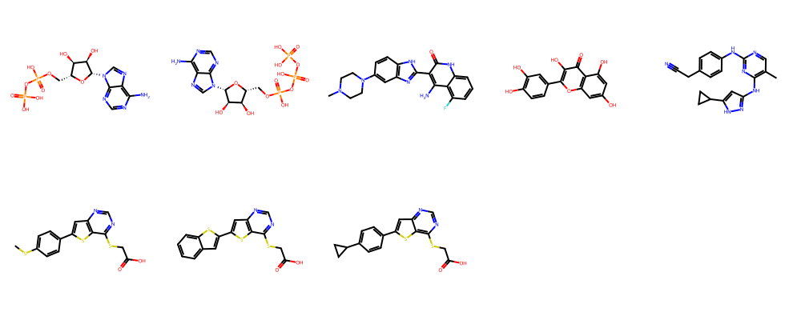

T012 · 从KLIFS获取数据¶
注： 本教程是TeachOpenCADD的一部分，该平台旨在教授领域特定技能，并提供作为研究项目起点的流程模板。
作者：
Dominique Sydow, 2019-2020, Volkamer lab, Charité
Jaime Rodríguez-Guerra, 2019-2020, Volkamer lab, Charité
David Schaller, 2020, Volkamer lab, Charité
本教程目标¶
KLIFS 是一个激酶-配体相互作用指纹和结构的数据库。在本教程中，我们将使用对该数据库的程序化访问（KLIFS OpenAPI）和 opencadd（GitHub）包来与其丰富的内容进行交互。
首先，我们将使用一个查询激酶（EGFR）来获取所有可用的蛋白质结构，并探索其结合的配体以及相互作用指纹。然后，我们将探索EGFR抑制剂吉非替尼的生物活性数据，以寻找脱靶靶点。最后，我们提供一个便捷函数，可以轻松探索不同的激酶。
理论 目录¶
激酶
EGFR与吉非替尼
KLIFS数据库
KLIFS OpenAPI
opencadd
实践 目录¶
定义目标激酶和配体：EGFR与吉非替尼
生成KLIFS Python客户端
探索KLIFS OpenAPI
激酶组
激酶家族
激酶
结构
相互作用指纹
结构坐标
配体
案例研究：EGFR（使用
opencadd）获取EGFR的所有结构
平均相互作用指纹
选择一个示例EGFR-吉非替尼结构
使用
nglview展示结构使用
rdkit展示所有激酶结合配体探索吉非替尼的谱数据
在KLIFS中探索随机激酶
参考文献¶
蛋白激酶及其抑制简介（《Med. Chem. Anticancer Drugs》第9章 (2008), 251-305）
Manning等人的激酶分类（《Science》 (2002), 298, 1912-1934）
以激酶为中心的计算药物开发（《Annu. Rep. Med. Chem.》 (2017), 50, 197-236）
EGFR与吉非替尼
EGFR家族综述（《Pharmacol. Res.》 (2019), 139, 395-411 和 《Front. Cell Dev. Biol.》 (2016), 8）
UniProt上的EGFR激酶详情（UniProt）
PubChem上的吉非替尼详情（PubChem）
KLIFS - 激酶-抑制剂相互作用数据库
主要数据库/网站参考文献（《Nucleic Acids Res.》 (2020)）
KLIFS网站和数据库介绍（《Nucleic Acids Res.》 (2016), 44, 6, D365–D371）
初始KLIFS数据集、结合模式分类、残基编号（《J. Med. Chem.》 (2014), 57, 2, 249-277）
NGLView，交互式分子可视化工具（《Bioinformatics》 (2018), 34, 1241–124）
[1]:
import sys
if "google.colab" in sys.modules:
%pip install teachopencadd --no-deps -q
!teachopencadd -d 12
%pip uninstall teachopencadd -y -q
%pip install -qr requirements.txt
理论¶
激酶¶
蛋白激酶是最重要和研究最充分的药物靶点之一，因为它们对细胞生命的大多数方面都至关重要。它们的失调会导致许多疾病，如癌症、炎症和自身免疫性疾病。
蛋白激酶催化自身或其他激酶的酪氨酸、丝氨酸、苏氨酸和组氨酸残基的磷酸化（《Med. Chem. Anticancer Drugs》 (2008), 251-305）。 人类基因组编码了518种蛋白激酶，根据序列相似性，在著名的Manning树中被聚类为八个主要激酶组（AGC, CAMK, CK1, CMGC, STE, TK, TKL及其他）（《Science》 (2002), 298, 1912-1934）。每个激酶组进一步被划分为不同的激酶家族。 由于所有激酶都结合ATP，它们的结合位点在序列和结构上高度保守，这使得它们在开发选择性药物时成为困难的药物靶点。
由于这类蛋白质研究得非常充分，可用数据量越来越多，因此需要并依赖于能够组织、分析和提供这些数据的基础设施，以促进以激酶为核心的药物开发（《Annu. Rep. Med. Chem.》 (2017), 50, 197-236）。其中丰富的资源之一是KLIFS数据库，本教程将使用该数据库。
EGFR与吉非替尼¶
表皮生长因子受体 (EGFR) 是EGFR (ErbB) 受体家族的成员，该家族由四个密切相关的受体酪氨酸激酶组成：EGFR (ErbB1)、HER2/neu (ErbB2)、Her3 (ErbB3) 和 Her4 (ErbB4)。 EGFR是第一个被证明突变、过表达与癌症之间存在关系的受体。通过阻断EGFR结合位点来中断EGFR信号传导，有助于阻止肿瘤生长并改善患者健康。首个EGFR抑制剂吉非替尼（配体Expo ID “IRE”）于2003年获批。（《Pharmacol. Res.》 (2019), 139, 395-411 和 《Front. Cell Dev. Biol.》 (2016), 8）
KLIFS数据库¶
激酶-配体相互作用指纹和结构数据库 (KLIFS) 是一个提供催化激酶结构域的蛋白质结构（来自PDB）及其与配体相互作用信息的数据库。
作用：激酶-配体相互作用谱数据库
API：是，基于REST，支持OpenAPI。无官方客户端。使用
bravado。文献：
主要数据库/网站参考文献（《Nucleic Acids Res.》 (2020)）
KLIFS网站和数据库介绍（《Nucleic Acids Res.》 (2016), 44, 6, D365–D371）
初始KLIFS数据集、结合模式分类、残基编号（《J. Med. Chem.》 (2014), 57, 2, 249-277）
激酶-配体相互作用指纹和结构数据库 (KLIFS)，由阿姆斯特丹自由大学药物化学系开发，是一个围绕催化激酶结构域的蛋白质结构以及激酶抑制剂如何与之相互作用的数据库。基于底层系统化和一致的协议，所有（目前为人类和小鼠）激酶结构和激酶配体的结合模式可以直接相互比较。此外，由于对包含85个残基的全面结合位点进行了分类，可以比较激酶-抑制剂的相互作用模式，例如，识别决定激酶-抑制剂选择性的关键相互作用。

图1: KLIFS数据库中提供的关键激酶资源。
KLIFS OpenAPI¶
KLIFS数据库提供标准化的URL方案（REST API），用于以编程方式访问KLIFS服务器上的资源。您可以将这样的URL粘贴到浏览器中（发送__请求__），然后会返回一个结果（接收__响应__）。例如，以下URL将从KLIFS获取与激酶抑制剂吉非替尼（PDB中的配体Expo ID: IRE）相关的所有ChEMBL生物活性值：
https://klifs.net/api/bioactivity_list_pdb?ligand_PDB=IRE
当然，您可以用自己的脚本或库（客户端）生成这些URL方案，但如果不需要处理设置URL的技术细节，那__真的__会更好。 幸运的是，有一个解决方案——一些网站提供定义REST API方案的文件（OpenAPI规范，以前称为__Swagger规范__）。 KLIFS就是其中之一！
看看KLIFS的这种文档是什么样的（这是一个json文件）：https://klifs.net/swagger/swagger.json
您还可以通过交互式用户界面（Swagger UI）探索定义：http://klifs.net/swagger/
我们现在知道可以通过URL获取KLIFS结果，并且通过KLIFS OpenAPI定义，我们知道这些URL应该是什么样子。 我们还缺少的是一个优秀的Python程序（客户端），它提供一个简单的Python API，在底层为我们发送这些请求并接收响应。
幸运的是，像bravado这样的库可以根据OpenAPI定义动态生成这样的Python客户端。因此，bravado可以根据KLIFS OpenAPI定义生成一个KLIFS客户端。这个KLIFS客户端将提供许多不同的方法来与KLIFS网络服务交互（如OpenAPI定义所定义的）。在本教程的_实践_部分，我们将回顾这些步骤！
opencadd¶
opencadd 是由Volkamer实验室开发的用于结构化学信息学的Python库。 该库是一个不断增长的模块集合，有助于促进和标准化结构生物信息学和化学信息学中的常见任务，例如结构叠加模块（opencadd.structure.superposition）或KLIFS查询模块（opencadd.databases.klifs）。
在本教程中，我们将使用KLIFS专用模块。它提供了一个标准化的API，可以在本地（KLIFS下载）或远程（KLIFS OpenAPI）使用KLIFS数据。大多数查询结果以标准化的pandas DataFrame形式返回，以便快速方便地进行数据操作。
实践¶
[2]:
import logging
logging.getLogger("numexpr").setLevel(logging.ERROR)
from bravado.client import SwaggerClient
from IPython.display import display, Markdown
import pandas as pd
import nglview as nv
from rdkit import Chem
from rdkit.Chem.Draw import IPythonConsole, MolsToGridImage
import opencadd
# 在本教程中，DataFrame最多显示50列
pd.set_option("display.max_columns", 50)
首先，我们定义目标激酶和配体（EGFR和吉非替尼）。接下来，我们先使用KLIFS OpenAPI，然后使用opencadd的KLIFS模块探索它们的KLIFS数据。
定义目标激酶和配体：EGFR与吉非替尼¶
[3]:
species = "Human"
kinase_group = "TK"
kinase_family = "EGFR"
kinase_name = "EGFR"
ligand_expo_id = "IRE"
生成KLIFS Python客户端¶
首先，我们使用提供的KLIFS OpenAPI (Swagger) 定义生成一个KLIFS Python客户端。
[4]:
KLIFS_API_DEFINITIONS = "https://klifs.net/swagger/swagger.json"
KLIFS_CLIENT = SwaggerClient.from_url(KLIFS_API_DEFINITIONS, config={"validate_responses": False})
与任何Python库一样，您可以在按下Tab键后访问KLIFS客户端的入口点
KLIFS_CLIENT.
可用的入口点有：
KLIFS_CLIENT.Information：访问激酶（名称、组、家族等）。KLIFS_CLIENT.Interactions：访问激酶-配体相互作用指纹。KLIFS_CLIENT.Ligands：访问激酶结合配体（名称、SMILES等）及其对激酶的测量生物活性（ChEMBL数据）。KLIFS_CLIENT.Structures：访问有配体和无配体的激酶结构（包括经KLIFS处理的PDB数据）。
探索KLIFS OpenAPI¶
让我们向KLIFS发送几个请求，探索目标激酶和配体的可用数据。
1. 激酶组¶
让我们看看可用的激酶组。
[5]:
kinase_groups = KLIFS_CLIENT.Information.get_kinase_groups().response().result
# 注：IPython的display函数可用于将输出渲染为Markdown
display(Markdown("All kinase groups are returned as a list of strings:"))
print(kinase_groups)
# NBVAL_CHECK_OUTPUT
All kinase groups are returned as a list of strings:
['AGC', 'CAMK', 'CK1', 'CMGC', 'Other', 'STE', 'TK', 'TKL']
2. 激酶家族¶
现在让我们看看目标激酶组（kinase_group）的所有可用激酶家族。
[6]:
# 注：所有代码行长度不应超过99个字符
# 因此，有时使用括号以便将代码行拆分为多行
# （您也可以不加括号写在一行中！）
kinase_families = (
KLIFS_CLIENT.Information.get_kinase_families(kinase_group=kinase_group).response().result
)
display(Markdown(f"Kinase families in {kinase_group} are returned as a list of strings:"))
print(kinase_families)
Kinase families in TK are returned as a list of strings:
['ALK', 'Abl', 'Ack', 'Alk', 'Axl', 'CCK4', 'Csk', 'DDR', 'EGFR', 'Eph', 'FAK', 'FGFR', 'Fer', 'InsR', 'JakA', 'JakB', 'Lmr', 'Met', 'Musk', 'PDGFR', 'Ret', 'Ror', 'Ryk', 'Sev', 'Src', 'Syk', 'TK-Unique', 'Tec', 'Tie', 'Trk', 'VEGFR']
3. 激酶¶
以下激酶属于目标激酶家族（kinase_family）：
[7]:
kinases = (
KLIFS_CLIENT.Information.get_kinase_names(kinase_family=kinase_family, species=species)
.response()
.result
)
display(
Markdown(
f"Kinases in the {species.lower()} family {kinase_family} as a list of objects "
f"that contain kinase-specific information:"
)
)
kinases
Kinases in the human family EGFR as a list of objects that contain kinase-specific information:
[7]:
[IDlist(full_name='epidermal growth factor receptor', kinase_ID=406, name='EGFR', species='Human'),
IDlist(full_name='erb-b2 receptor tyrosine kinase 2', kinase_ID=407, name='ERBB2', species='Human'),
IDlist(full_name='erb-b2 receptor tyrosine kinase 3', kinase_ID=408, name='ERBB3', species='Human'),
IDlist(full_name='erb-b2 receptor tyrosine kinase 4', kinase_ID=409, name='ERBB4', species='Human')]
在本教程中，我们关注的是kinase_name中定义的激酶。 让我们提取该激酶的KLIFS ID，用于在KLIFS中查询结构。
[8]:
# 使用迭代器获取列表的第一个元素
kinase_klifs_id = next(kinase.kinase_ID for kinase in kinases if kinase.name == kinase_name)
display(Markdown(f"Kinase KLIFS ID for {kinase_name}: {kinase_klifs_id}"))
# NBVAL_CHECK_OUTPUT
Kinase KLIFS ID for EGFR: 406
4. 结构¶
我们获取KLIFS中该激酶的所有可用__结构__，并展示一个示例性配体结合结构的详细信息。
[9]:
structures = (
KLIFS_CLIENT.Structures.get_structures_list(kinase_ID=[kinase_klifs_id]).response().result
)
display(
Markdown(
f"Number of structures for the kinase {kinase_name}: {len(structures)}\n\n"
f"Example structure, i.e. the first structure in the result list that contains a ligand:"
)
)
# 如果结构不含配体，ligand字段设置为0
structure = next(structure for structure in structures if structure.ligand != 0)
structure
Number of structures for the kinase EGFR: 565
Example structure, i.e. the first structure in the result list that contains a ligand:
[9]:
structureDetails(DFG='in', Grich_angle=48.1597, Grich_distance=14.8202, Grich_rotation=43.046, aC_helix='out', allosteric_ligand=0, alt='A', back=True, bp_III=False, bp_II_A_in=True, bp_II_B=False, bp_II_B_in=False, bp_II_in=True, bp_II_out=False, bp_IV=False, bp_I_A=True, bp_I_B=True, bp_V=False, chain='A', fp_I=False, fp_II=False, front=True, gate=True, kinase='EGFR', kinase_ID=406, ligand='W19', missing_atoms=0, missing_residues=0, pdb='3w33', pocket='KVLGSGAFGTVYKVAIKELEILDEAYVMASVDPHVCRLLGIQLITQLMPFGCLLDYVREYLEDRRLVHRDLAARNVLVITDFGLA', quality_score=8.0, resolution=1.7, rmsd1=0.814, rmsd2=2.153, species='Human', structure_ID=782)
如示例结构所示，KLIFS提供以下信息：
该结构代表的激酶及其口袋序列
结合的配体，包括配体占据的子口袋详情
结构质量和构象
基于对超过1200个激酶-配体晶体结构的初始分析，KLIFS作者定义了一个包含85个残基的口袋，涵盖了激酶-配体结构中观察到的相互作用。对于我们的示例，口袋序列如下：
[10]:
display(Markdown(f"Pocket sequence:\n\n{structure.pocket}\n\n({len(structure.pocket)} residues)"))
Pocket sequence:
KVLGSGAFGTVYKVAIKELEILDEAYVMASVDPHVCRLLGIQLITQLMPFGCLLDYVREYLEDRRLVHRDLAARNVLVITDFGLA
(85 residues)
5. 相互作用指纹¶
接下来，我们获取示例激酶-配体复合物结构的相互作用指纹 (IFP)。KLIFS IFP针对85个残基中的每一个和7种相互作用类型，检查该残基与配体之间是否存在相互作用 (1) 或不存在 (0)。
[11]:
KLIFS_CLIENT.Interactions.get_interactions_get_types().response().result
[11]:
[{'position': '1', 'name': 'Apolar contact'},
{'position': '2', 'name': 'Aromatic face-to-face'},
{'position': '3', 'name': 'Aromatic edge-to-face'},
{'position': '4', 'name': 'Hydrogen bond donor (protein)'},
{'position': '5', 'name': 'Hydrogen bond acceptor (protein)'},
{'position': '6', 'name': 'Protein cation - ligand anion'},
{'position': '7', 'name': 'Protein anion - ligand cation'}]
这产生了一个 \(85 \cdot 7 = 595\) 位的IFP。让我们看看示例结构的IFP。
[12]:
structure_klifs_id = structure.structure_ID
interaction_fingerprints = (
KLIFS_CLIENT.Interactions.get_interactions_get_IFP(structure_ID=[structure_klifs_id])
.response()
.result
)
interaction_fingerprints
[12]:
[{'structure_ID': 782,
'IFP': '0000000000000010000001000000000000000000000000000000000000000000000000100000000000000000000000000010000001000000100000000000000000000000000000000000000000000000000000000000000000000000000001000000000000000000000000000000000000000000000000000000010000001000000100000000000000000000000000000000001000000100000010000001000000100000010011000000000000000010000000000000000000000000000000000000000000000000000000000000000000000000000000000000000000000000000000000000000000000000000000000000000000000000000000000000000000000000000000000000100000000000000000000100000010000001010000000000010000000000000'}]
在本教程的后面部分，我们将展示一个如何使用这些IFP信息的快速示例。
6. 结构坐标¶
到目前为止，我们已经探索了很多结构属性。让我们以字符串形式获取第一个结构的实际结构数据，其中包含激酶-配体复合物的原子坐标。
[13]:
complex_coordinates = (
KLIFS_CLIENT.Structures.get_structure_get_pdb_complex(structure_ID=structures[0].structure_ID)
.response()
.result
)
# 显示一些示例行
complex_coordinates.split("\n")[100:110]
[13]:
['ATOM 67 N GLU A 709 18.017 26.733 45.799 1.00 0.00 N ',
'ATOM 68 CA GLU A 709 17.685 25.527 46.562 1.00 0.00 C ',
'ATOM 69 C GLU A 709 17.372 25.814 48.036 1.00 0.00 C ',
'ATOM 70 O GLU A 709 16.634 25.071 48.672 1.00 0.00 O ',
'ATOM 71 CB GLU A 709 18.816 24.503 46.474 1.00 0.00 C ',
'ATOM 72 CG GLU A 709 18.851 23.724 45.177 1.00 0.00 C ',
'ATOM 73 CD GLU A 709 19.877 22.613 45.199 1.00 0.00 C ',
'ATOM 74 OE1 GLU A 709 19.470 21.427 45.212 1.00 0.00 O ',
'ATOM 75 OE2 GLU A 709 21.088 22.925 45.212 1.00 0.00 O1-',
'ATOM 76 N THR A 710 17.928 26.893 48.572 1.00 0.00 N ']
7. 配体¶
最后但同样重要的是，让我们快速了解一下KLIFS中的另一个重要资源。对于每个配体，可以提取针对不同激酶测量的所有生物活性数据。这些生物活性数据来自ChEMBL，一个人工管理的化合物数据库（查看__教程T001__了解更多关于ChEMBL的信息）。
[14]:
bioactivities = (
KLIFS_CLIENT.Ligands.get_bioactivity_list_pdb(ligand_PDB=structure.ligand).response().result
)
display(
Markdown(
f"Number of ChEMBL bioactivity values available in KLIFS for example ligand {structure.ligand}: {len(bioactivities)}\n\n"
f"Example bioactivity:"
)
)
bioactivities[0]
Number of ChEMBL bioactivity values available in KLIFS for example ligand W19: 10
Example bioactivity:
[14]:
{'pref_name': 'Dual specificity mitogen-activated protein kinase kinase 5',
'accession': 'Q13163',
'organism': 'Homo sapiens',
'standard_type': 'IC50',
'standard_relation': '=',
'standard_value': '870.0',
'standard_units': 'nM',
'pchembl_value': '6.06'}
案例研究：EGFR（使用opencadd）¶
在介绍了上述KLIFS OpenAPI之后，我们现在使用opencadd.databases.klifs模块，它是KLIFS客户端的封装。 如本教程_理论_部分所述，该模块将所有响应以pandas DataFrame的形式返回，以便快速方便地操作。
[15]:
from opencadd.databases.klifs import setup_remote
session = setup_remote()
1. 获取EGFR的所有结构¶
[16]:
structures = session.structures.by_kinase_klifs_id(kinase_klifs_id)
display(Markdown(f"Number of structures for the kinase {kinase_name}: {len(structures)}"))
Number of structures for the kinase EGFR: 565
获取查询的EGFR结构的IFP。注意，只有配体结合的结构才能有IFP。
[17]:
structure_klifs_ids = structures["structure.klifs_id"].to_list()
interaction_fingerprints = session.interactions.by_structure_klifs_id(structure_klifs_ids)
display(
Markdown(
f"Number of IFPs for {kinase_name}: {len(interaction_fingerprints)}\n\n"
f"Show example IFPs:"
)
)
interaction_fingerprints.head()
Number of IFPs for EGFR: 508
Show example IFPs:
[17]:
| structure.klifs_id | interaction.fingerprint | |
|---|---|---|
| 0 | 775 | 0000000000000010000000000000000000000000000000... |
| 1 | 777 | 0000000000000010000001000000000000000000000000... |
| 2 | 778 | 0000000000000010000000000000000000000000000000... |
| 3 | 779 | 0000000000000010000001000000000000000000000000... |
| 4 | 781 | 0000000000000010000001000000000000000000000000... |
2. 平均相互作用指纹¶
让我们汇总目标激酶所有可用配体结合结构中每个残基位置的相互作用类型信息。
[18]:
def average_n_interactions_per_residue(structure_klifs_ids):
"""
生成包含每个残基和相互作用类型的平均相互作用次数的残基位置×相互作用类型矩阵。
参数
----------
structure_klifs_ids : list of int
结构KLIFS ID列表。
返回
-------
pandas.DataFrame
每个残基（行）和相互作用类型（列）的平均相互作用次数。
"""
# Get IFP (is returned from KLIFS as string)
ifps = session.interactions.by_structure_klifs_id(structure_klifs_ids)
# Split string into list of int (0, 1): structures x IFP bits matrix
ifps = pd.DataFrame(ifps["interaction.fingerprint"].apply(lambda x: list(x)).to_list())
ifps = ifps.astype("int32")
# Sum up all interaction per bit position and normalize by number of IFPs
ifp_relative = (ifps.sum() / len(ifps)).to_list()
# Transform aggregated IFP into residue position x interaction type matrix
residue_feature_matrix = pd.DataFrame(
[ifp_relative[i : i + 7] for i in range(0, len(ifp_relative), 7)], index=range(1, 86)
)
# Add interaction type names
columns = session.interactions.interaction_types["interaction.name"].to_list()
residue_feature_matrix.columns = columns
return residue_feature_matrix
[19]:
residue_feature_matrix = average_n_interactions_per_residue(structure_klifs_ids)
display(
Markdown(
f"Calculated average interactions per interaction type (feature) and residue position:\n\n"
f"**Interaction types** (columns): {', '.join(residue_feature_matrix.columns)}\n\n"
f"**Residue positions** (rows): {residue_feature_matrix.index}"
)
)
# NBVAL_CHECK_OUTPUT
Calculated average interactions per interaction type (feature) and residue position:
Interaction types (columns): Apolar contact, Aromatic face-to-face, Aromatic edge-to-face, Hydrogen bond donor (protein), Hydrogen bond acceptor (protein), Protein cation - ligand anion, Protein anion - ligand cation
Residue positions (rows): RangeIndex(start=1, stop=86, step=1)
[20]:
residue_feature_matrix.head()
[20]:
| Apolar contact | Aromatic face-to-face | Aromatic edge-to-face | Hydrogen bond donor (protein) | Hydrogen bond acceptor (protein) | Protein cation - ligand anion | Protein anion - ligand cation | |
|---|---|---|---|---|---|---|---|
| 1 | 0.001969 | 0.0 | 0.0 | 0.0 | 0.000000 | 0.0 | 0.0 |
| 2 | 0.000000 | 0.0 | 0.0 | 0.0 | 0.000000 | 0.0 | 0.0 |
| 3 | 0.976378 | 0.0 | 0.0 | 0.0 | 0.003937 | 0.0 | 0.0 |
| 4 | 0.679134 | 0.0 | 0.0 | 0.0 | 0.000000 | 0.0 | 0.0 |
| 5 | 0.322835 | 0.0 | 0.0 | 0.0 | 0.000000 | 0.0 | 0.0 |
[21]:
residue_feature_matrix.plot.bar(
figsize=(15, 5),
stacked=True,
xlabel="KLIFS pocket residue position",
ylabel="Average number of interactions (per interaction type)",
color=["grey", "green", "limegreen", "red", "blue", "orange", "cyan"],
);

非极性接触很好地显示了哪些残基与配体的疏水部分紧密接触。大多数配体在位置48显示氢键作用，该位置属于结合位点的铰链区，是激酶-配体结合的亲水性锚点位置。
3. 选择一个示例EGFR-吉非替尼结构¶
只保留目标配体（ligand_expo_id）结合的结构，按最高分辨率排序，并展示前10个结构。
[22]:
subset = structures[(structures["ligand.expo_id"] == ligand_expo_id)]
subset.sort_values(by="structure.resolution").head(10)
[22]:
| structure.klifs_id | structure.pdb_id | structure.alternate_model | structure.chain | species.klifs | kinase.klifs_id | kinase.klifs_name | kinase.names | kinase.family | kinase.group | structure.pocket | ligand.expo_id | ligand_allosteric.expo_id | ligand.klifs_id | ligand_allosteric.klifs_id | ligand.name | ligand_allosteric.name | structure.dfg | structure.ac_helix | structure.resolution | structure.qualityscore | structure.missing_residues | structure.missing_atoms | structure.rmsd1 | structure.rmsd2 | interaction.fingerprint | structure.front | structure.gate | structure.back | structure.fp_i | structure.fp_ii | structure.bp_i_a | structure.bp_i_b | structure.bp_ii_in | structure.bp_ii_a_in | structure.bp_ii_b_in | structure.bp_ii_out | structure.bp_ii_b | structure.bp_iii | structure.bp_iv | structure.bp_v | structure.grich_distance | structure.grich_angle | structure.grich_rotation | structure.filepath | structure.curation_flag | |
|---|---|---|---|---|---|---|---|---|---|---|---|---|---|---|---|---|---|---|---|---|---|---|---|---|---|---|---|---|---|---|---|---|---|---|---|---|---|---|---|---|---|---|---|---|---|---|
| 42 | 823 | 4i22 | - | A | Human | 406 | EGFR | <NA> | <NA> | <NA> | KVLGSGAFGTVYKVAIKELEILDEAYVMASVDPHVCRLLGIQLIMQ... | IRE | - | 222 | 0 | <NA> | <NA> | in | out | 1.71 | 8.0 | 0 | 0 | 0.810 | 2.159 | <NA> | True | True | False | False | False | True | True | False | False | False | False | False | False | False | False | 14.6390 | 47.539398 | 47.973499 | <NA> | False |
| 47 | 837 | 4wkq | B | A | Human | 406 | EGFR | <NA> | <NA> | <NA> | KVLGSG___TVYKVAIKE_EILDEAYVMASVDPHVCRLLGIQLITQ... | IRE | - | 222 | 0 | <NA> | <NA> | in | in | 1.85 | 6.7 | 5 | 13 | 0.776 | 1.995 | <NA> | True | True | False | False | False | True | True | False | False | False | False | False | False | False | False | 0.0000 | 0.000000 | 0.000000 | <NA> | False |
| 93 | 889 | 4wkq | A | A | Human | 406 | EGFR | <NA> | <NA> | <NA> | KVLGSG___TVYKVAIKE_EILDEAYVMASVDPHVCRLLGIQLITQ... | IRE | - | 222 | 0 | <NA> | <NA> | in | in | 1.85 | 6.7 | 5 | 13 | 0.776 | 1.995 | <NA> | True | True | False | False | False | True | True | False | False | False | False | False | False | False | False | 0.0000 | 0.000000 | 0.000000 | <NA> | False |
| 23 | 819 | 3ug2 | B | A | Human | 406 | EGFR | <NA> | <NA> | <NA> | KVLSSG___TVYKVAIKE_EILDEAYVMASVDPHVCRLLGIQLIMQ... | IRE | - | 222 | 0 | <NA> | <NA> | in | in | 2.50 | 7.6 | 4 | 8 | 0.778 | 2.014 | <NA> | True | True | True | False | False | True | True | False | False | False | False | False | False | False | False | 0.0000 | 0.000000 | 0.000000 | <NA> | False |
| 98 | 898 | 3ug2 | A | A | Human | 406 | EGFR | <NA> | <NA> | <NA> | KVLSSG___TVYKVAIKE_EILDEAYVMASVDPHVCRLLGIQLIMQ... | IRE | - | 222 | 0 | <NA> | <NA> | in | in | 2.50 | 7.6 | 4 | 8 | 0.778 | 2.014 | <NA> | True | True | True | False | False | True | True | False | False | False | False | False | False | False | False | 0.0000 | 0.000000 | 0.000000 | <NA> | False |
| 18 | 789 | 2itz | - | A | Human | 406 | EGFR | <NA> | <NA> | <NA> | KVLGSGAFGTVYKVAIKELEILDEAYVMASVDPHVCRLLGIQLITQ... | IRE | - | 222 | 0 | <NA> | <NA> | in | in | 2.72 | 9.4 | 0 | 6 | 0.776 | 2.097 | <NA> | True | True | False | False | False | True | True | False | False | False | False | False | False | False | False | 18.0567 | 58.131699 | 30.073000 | <NA> | False |
| 2 | 783 | 2ito | - | A | Human | 406 | EGFR | <NA> | <NA> | <NA> | KVLSSGAFGTVYKVAIKELEILDEAYVMASVDPHVCRLLGIQLITQ... | IRE | - | 222 | 0 | <NA> | <NA> | in | in | 3.25 | 8.0 | 0 | 0 | 0.778 | 2.096 | <NA> | True | True | False | False | False | True | True | False | False | False | False | False | False | False | False | 19.7766 | 63.316700 | 23.749100 | <NA> | False |
| 20 | 790 | 2ity | - | A | Human | 406 | EGFR | <NA> | <NA> | <NA> | KVLGSGAFGTVYKVAIKELEILDEAYVMASVDPHVCRLLGIQLITQ... | IRE | - | 222 | 0 | <NA> | <NA> | in | in | 3.42 | 8.0 | 0 | 0 | 0.778 | 2.103 | <NA> | True | True | False | False | False | True | True | False | False | False | False | False | False | False | False | 19.5474 | 62.976700 | 21.934299 | <NA> | False |
[23]:
structure_klifs_id = (
structures[(structures["ligand.expo_id"] == ligand_expo_id)]
.sort_values(by="structure.resolution")
.iloc[0]["structure.klifs_id"]
)
message = f"Structure KLIFS ID for best resolved {ligand_expo_id}-bound {kinase_name}: {structure_klifs_id}"
display(Markdown(message))
Structure KLIFS ID for best resolved IRE-bound EGFR: 823
4. 使用nglview展示结构¶
让我们用nglview预览蛋白质-配体复合物。
[24]:
def show_molecule(structure_text, extension="mol2"):
"""
Show molecule with nglview.
参数
----------
structure_text : str
字符串形式的结构数据。
extension : str
结构数据的格式（默认：mol2）。
返回
-------
nglview.widget.NGLWidget
分子查看器。
"""
v = nv.NGLWidget()
v.add_component(structure_text, ext=extension)
return v
[25]:
structure_text = session.coordinates.to_text(structure_klifs_id, "complex", "pdb")
v = show_molecule(structure_text, "pdb")
v
[26]:
v.render_image();
[27]:
v._display_image()
[27]:
让我们在structure_klifs_id示例结构中突出显示具有频繁相互作用的残基（跨kinase_klifs_id激酶的所有IFP，此处为激酶EGFR）。使用features定义要查看的特征类型，使用feature_cutoff定义高亮的阈值（None表示将显示在所有结构中至少显示过一次相互作用的任何残基）。
[28]:
def show_kinase_feature_positions(
kinase_klifs_id, structure_klifs_id, features=["HBD"], feature_cutoff=None
):
"""
显示示例激酶结构，并对显示定义类型的相互作用的残基进行着色
（基于该激酶的相互作用指纹）。
参数
----------
kinase_klifs_id : int
用于获取所有相关IFP的激酶KLIFS ID。
structure_klifs_id : int
用于映射每个残基的平均特征覆盖度的结构KLIFS ID。
features : list of str
一个或多个特征类型（H, AR.f2f, AR.e2f, HBD, HBA, NI, PI）。
feature_cutoff : int or float
仅显示平均特征覆盖度高于此阈值的残基。
返回
-------
nglview.widget.NGLWidget
分子查看器。
"""
# Get all structures KLIFS ID for a kinase
structures = session.structures.by_kinase_klifs_id(kinase_klifs_id)
structure_klifs_ids = structures["structure.klifs_id"].to_list()
# Get aggregated residue-feature matrix from IFPs
residue_feature_matrix = average_n_interactions_per_residue(structure_klifs_ids)
residue_feature_matrix.columns = "H AR.f2f AR.e2f HBD HBA NI PI".split()
# Aggregate feature values
residues_features = residue_feature_matrix[features].sum(axis=1)
# Fetch the PDB residue numbers for the 85 pocket residues
index = session.pockets.by_structure_klifs_id(structure_klifs_id)["residue.id"]
residues_features.index = index
# Keep only residues with feature occurrence above a cutoff occurrence
if feature_cutoff:
residues_features = residues_features[residues_features > feature_cutoff]
# Prepare residue-color mapping in a nglview-required format
color_scheme_list = [
["cornflowerblue", residue_id] for residue_id, _ in residues_features.items()
]
color_scheme = nv.color._ColorScheme(color_scheme_list, label="interactions")
structure_text = session.coordinates.to_text(structure_klifs_id, "complex", "pdb")
ligand_expo_id = session.structures.by_structure_klifs_id(structure_klifs_id).iloc[0][
"ligand.expo_id"
]
v = show_molecule(structure_text, "pdb")
v.clear()
v.add_representation("cartoon", selection="protein", color=color_scheme)
v.add_representation("ball+stick", selection=ligand_expo_id)
return v
[29]:
selected_features = ["HBD", "HBA"]
feature_cutoff = 0.25
[30]:
display(
Markdown(
f"Show residues with interaction(s) {selected_features} for kinase #{kinase_klifs_id} "
f"on structure #{structure_klifs_id} that have been seen in at least {feature_cutoff} of all structures."
)
)
v = show_kinase_feature_positions(
kinase_klifs_id, structure_klifs_id, features=selected_features, feature_cutoff=0.25
)
v.center(selection=ligand_expo_id)
v
Show residues with interaction(s) [‘HBD’, ‘HBA’] for kinase #406 on structure #823 that have been seen in at least 0.25 of all structures.
[31]:
v.render_image();
[32]:
v._display_image()
[32]:

5. 使用rdkit展示所有激酶结合配体¶
让我们使用rdkit（一个流行的化学信息学库）查看所有EGFR结合配体。
[33]:
def show_ligands(smiles):
return Chem.Draw.MolsToGridImage(
[Chem.MolFromSmiles(s) for s in smiles], maxMols=10, molsPerRow=5
)
[34]:
ligands = session.ligands.by_kinase_klifs_id(kinase_klifs_id)
display(Markdown(f"Number of ligands bound to kinase #{kinase_klifs_id}: {len(ligands)}"))
# 仅显示前10个配体
show_ligands(ligands["ligand.smiles"].to_list()[:10])
Number of ligands bound to kinase #406: 153
[34]:

6. 探索吉非替尼的谱数据¶
获取吉非替尼的谱数据（生物活性）。
[35]:
bioactivities = session.bioactivities.by_ligand_expo_id(ligand_expo_id)
display(
Markdown(
f"Number of bioactivity values for {ligand_expo_id}: {len(bioactivities)}\n\n"
f"Show example bioactivities:\n\n"
)
)
bioactivities.sort_values("ligand.bioactivity_standard_value").head()
Number of bioactivity values for IRE: 338
Show example bioactivities:
[35]:
| kinase.pref_name | kinase.uniprot | kinase.chembl_id | ligand.chembl_id | ligand.bioactivity_standard_type | ligand.bioactivity_standard_relation | ligand.bioactivity_standard_value | ligand.bioactivity_standard_units | ligand.bioactivity_pchembl_value | species.chembl | ligand.expo_id (query) | |
|---|---|---|---|---|---|---|---|---|---|---|---|
| 60 | Epidermal growth factor receptor erbB1 | P00533 | CHEMBL203 | CHEMBL939 | IC50 | = | 0.10 | nM | 10.00 | Homo sapiens | IRE |
| 106 | Epidermal growth factor receptor erbB1 | P00533 | CHEMBL203 | CHEMBL939 | IC50 | = | 0.15 | nM | 9.82 | Homo sapiens | IRE |
| 107 | Epidermal growth factor receptor erbB1 | P00533 | CHEMBL203 | CHEMBL939 | IC50 | = | 0.17 | nM | 9.77 | Homo sapiens | IRE |
| 62 | Epidermal growth factor receptor erbB1 | P00533 | CHEMBL203 | CHEMBL939 | IC50 | = | 0.20 | nM | 9.70 | Homo sapiens | IRE |
| 154 | Epidermal growth factor receptor erbB1 | P00533 | CHEMBL203 | CHEMBL939 | IC50 | = | 0.32 | nM | 9.49 | Homo sapiens | IRE |
展示生物活性分布！
[36]:
bioactivities["ligand.bioactivity_standard_value"].plot(
kind="hist", title=f"ChEMBL bioactivity standard values (nM) for {ligand_expo_id}"
);

我们可以看到有许多高生物活性（低值）的测量结果和一些无生物活性（高值）的测量结果。 我们知道吉非替尼的预期靶点（on-target）是EGFR（也称为表皮生长因子受体erbB1）。查看是否有其他激酶被证明能强烈结合吉非替尼（脱靶靶点）将会很有趣。这些脱靶靶点通常是药物副作用的原因。
为了根据现有的ChEMBL谱数据寻找脱靶靶点，我们使用阈值activity_cutoff过滤生物活性数据集，仅保留显示高活性的测量结果，然后打印出所有针对非EGFR靶点的测量结果，即潜在的脱靶靶点。
[37]:
ACTIVITY_CUTOFF = 100
bioactivities_active = bioactivities[
bioactivities["ligand.bioactivity_standard_value"] < ACTIVITY_CUTOFF
]
display(Markdown("Number of measurements with high activity per kinase:"))
n_bioactivities_per_target = (
bioactivities_active.groupby("kinase.pref_name").size().sort_values(ascending=True)
)
n_bioactivities_per_target
Number of measurements with high activity per kinase:
[37]:
kinase.pref_name
Interleukin-1 receptor-associated kinase 1 1
Nuclear factor NF-kappa-B p65 subunit 1
Vascular endothelial growth factor receptor 2 1
Serine/threonine-protein kinase RIPK2 1
Serine/threonine-protein kinase GAK 2
Receptor protein-tyrosine kinase erbB-2 3
Epidermal growth factor receptor erbB1 99
dtype: int64
[38]:
display(Markdown(f"Off-targets of {ligand_expo_id} based on profiling data:"))
bioactivities_active[
bioactivities_active["kinase.pref_name"] != "Epidermal growth factor receptor erbB1"
].sort_values(["ligand.bioactivity_standard_value"])
Off-targets of IRE based on profiling data:
[38]:
| kinase.pref_name | kinase.uniprot | kinase.chembl_id | ligand.chembl_id | ligand.bioactivity_standard_type | ligand.bioactivity_standard_relation | ligand.bioactivity_standard_value | ligand.bioactivity_standard_units | ligand.bioactivity_pchembl_value | species.chembl | ligand.expo_id (query) | |
|---|---|---|---|---|---|---|---|---|---|---|---|
| 277 | Serine/threonine-protein kinase RIPK2 | O43353 | CHEMBL5014 | CHEMBL939 | IC50 | = | 3.800000 | nM | 8.42 | Homo sapiens | IRE |
| 272 | Serine/threonine-protein kinase GAK | O14976 | CHEMBL4355 | CHEMBL939 | Kd | = | 7.000000 | nM | 8.15 | Homo sapiens | IRE |
| 270 | Serine/threonine-protein kinase GAK | O14976 | CHEMBL4355 | CHEMBL939 | Kd | = | 13.000000 | nM | 7.89 | Homo sapiens | IRE |
| 241 | Receptor protein-tyrosine kinase erbB-2 | P04626 | CHEMBL1824 | CHEMBL939 | IC50 | = | 24.000000 | nM | 7.62 | Homo sapiens | IRE |
| 246 | Receptor protein-tyrosine kinase erbB-2 | P04626 | CHEMBL1824 | CHEMBL939 | Ki | = | 25.120001 | nM | 7.60 | Homo sapiens | IRE |
| 335 | Vascular endothelial growth factor receptor 2 | P35968 | CHEMBL279 | CHEMBL939 | IC50 | = | 48.500000 | nM | 7.31 | Homo sapiens | IRE |
| 219 | Nuclear factor NF-kappa-B p65 subunit | Q04206 | CHEMBL5533 | CHEMBL939 | IC50 | = | 55.000000 | nM | 7.26 | Homo sapiens | IRE |
| 194 | Interleukin-1 receptor-associated kinase 1 | P51617 | CHEMBL3357 | CHEMBL939 | Kd | = | 69.000000 | nM | 7.16 | Homo sapiens | IRE |
| 238 | Receptor protein-tyrosine kinase erbB-2 | P04626 | CHEMBL1824 | CHEMBL939 | IC50 | = | 97.000000 | nM | 7.01 | Homo sapiens | IRE |
让我们看看脱靶靶点，并尝试从激酶相似性的角度解释我们的结果（相似的激酶更可能结合相同的配体）——目前我们将重点关注序列相似性（即激酶组和家族）。
脱靶列表包含密切相关的激酶：
来自酪氨酸激酶 (TK) 组的激酶，EGFR本身也属于该组：例如ErbB2（EGFR家族的另一个成员）和VEGFR/KDR
来自相关类酪氨酸激酶 (TKL) 组的激酶：例如RIPK2和IRAK1
我们还发现了GAK激酶，它属于非典型激酶，仅从序列相似性来看可能不是一个明显的脱靶靶点，但它是另一个众所周知且有报道的脱靶靶点。这是一个很好的例子，说明序列并不是蛋白质相似性的唯一指标，结构相似性也起着非常重要的作用。
查看__教程T010__了解更多关于结合位点相似性和脱靶预测的详细信息。
在KLIFS中探索随机激酶¶
本部分旨在快速探索KLIFS中不同激酶的资源。
首先，我们定义一个函数，用于返回 (a) KLIFS中所有结构结合的配体，以及 (b) 随机激酶或给定激酶的一个随机结构。
[39]:
def get_random_kinase_structure_with_ligand_information(*kinase_names, seed=None):
"""
获取一个或多个激酶的示例结构（复合物和蛋白质结构数据）
以及所有结合配体的SMILES。
参数
----------
*kinase_names : str
激酶名称。
seed : int, array-like, BitGenerator, np.random.RandomState
随机数生成器的种子。默认为None。
返回
-------
molcomplex : str
复合物结构数据。
protein : str
蛋白质结构数据。
ligands : list of str
配体SMILES列表。
"""
# Get all structures for a given kinase
if kinase_names:
kinase_names = list(kinase_names)
try:
structures = session.structures.by_kinase_name(list(kinase_names))
except ValueError:
raise ValueError(f"The input kinase(s) {kinase_names} yielded no results.")
# Or get all available structures
else:
structures = session.structures.all_structures()
kinase_klifs_ids = [int(i) for i in structures["kinase.klifs_id"].unique()]
# Choose random structure and corresponding kinase
structure = structures.sample(random_state=seed).squeeze()
structure_klifs_id = structure["structure.klifs_id"]
kinase_klifs_id = structure["kinase.klifs_id"]
display(Markdown(f"Selected kinases: {structure['kinase.klifs_name']}"))
# Get complex structural data
molcomplex = (
KLIFS_CLIENT.Structures.get_structure_get_pdb_complex(structure_ID=structure_klifs_id)
.response()
.result
)
# Get protein structural data
protein = (
KLIFS_CLIENT.Structures.get_structure_get_protein(structure_ID=structure_klifs_id)
.response()
.result
)
# Get all ligands bound to all structures for input kinases
ligands = KLIFS_CLIENT.Ligands.get_ligands_list(kinase_ID=[kinase_klifs_id]).response().result
display(
Markdown(
f"Chosen KLIFS entry: PDB ID {structure['structure.pdb_id']} "
f"with chain {structure['structure.chain'] if structure['structure.chain'] else '-'} and "
f"alternate model {structure['structure.alternate_model'] if structure['structure.alternate_model'] else '-'} "
f"({structure['species.klifs'].lower()}).\n\n"
f"Number of structure-bound ligands: {len(ligands)}"
)
)
return molcomplex, protein, [ligand.SMILES for ligand in ligands]
其次，我们使用该函数获取随机激酶的数据。注：如果需要，您可以指定一个或多个激酶来缩小搜索空间，参见random_kinase_structure(*kinase_names)。
[40]:
# 我们在这里设置种子以确保结果可重复
# 移除种子以探索随机激酶
molcomplex, protein, ligands = get_random_kinase_structure_with_ligand_information(seed=1)
Selected kinases: DRAK2
Chosen KLIFS entry: PDB ID 6y6f with chain A and alternate model A (human).
Number of structure-bound ligands: 8
[41]:
show_ligands(ligands[:10])
[41]:

[42]:
v = show_molecule(molcomplex, "pdb")
v
[43]:
v.render_image();
[45]:
v._display_image()
[45]:
讨论¶
在本教程中，我们探索了如何使用 (a) KLIFS OpenAPI 和 (b) opencadd中的KLIFS专用模块与丰富的激酶资源KLIFS进行交互。首先，我们使用激酶EGFR提取了所有可用的配体结合结构及其KLIFS相互作用指纹，用于提取关键的氢键残基。其次，我们获取了吉非替尼的谱数据以研究EGFR的脱靶靶点。
小测验¶
解释下列术语并结合上下文说明：服务器、客户端、API、请求、响应、REST和OpenAPI。
查询KLIFS：KLIFS为Abl家族提供了多少种激酶？激酶CDK2有多少个可用结构？
解释如何利用抑制剂的谱数据来搜索脱靶靶点。
[ ]: